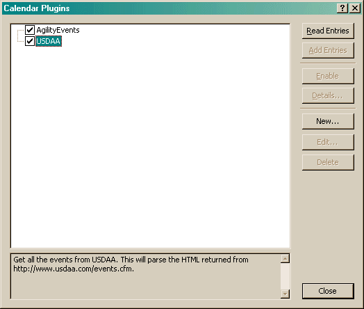
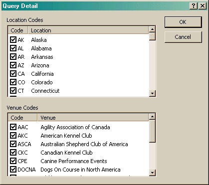

The Calendar Plugins dialog allows you to read calendar entries from different locations on the Internet.

When this dialog starts, it searches for any plugin DLLs in the executable's directory and configuration file. These are displayed with a check mark. This mark indicates to the Read Entries button which items will have their calendar data loaded. Depending on the site, this action may take several minutes.
Once the calendar entries are pulled over, the entries are displayed under their plugin. Checking the calendar entries you want to import will allow the Add Entries button to add and/or update existing entries.
Sometimes, a plugin will become disabled. This is normally because the website where we read the data from has changed format. Until a new release of the plugin is made available, or the website format changes back, there is nothing that can be done. However, if the plugin became disabled because the website was temporarily down, it can be re-enabled with the Enable button.
Some plugins have additional data that can be configured for the initial query (the Read Entries button). This data can limit the locations and venues that are returned. Click the Details... button to display the following dialog:
